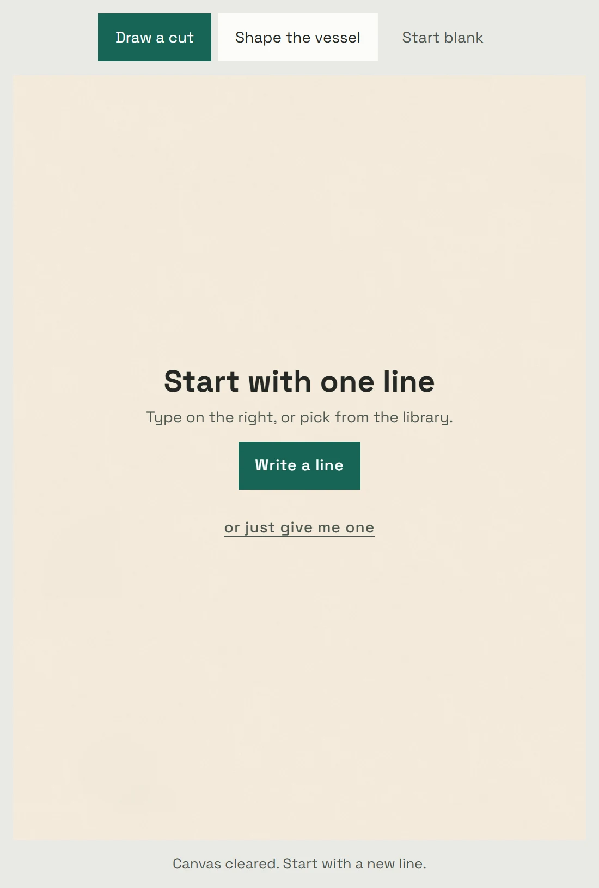
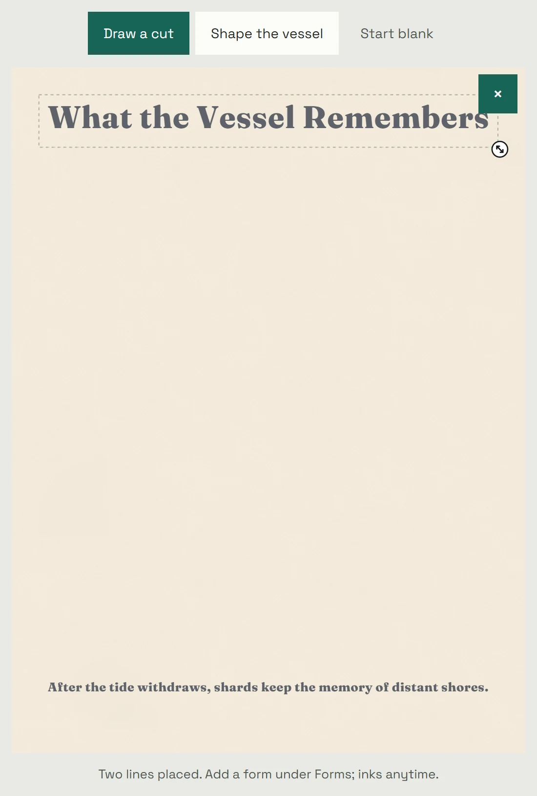
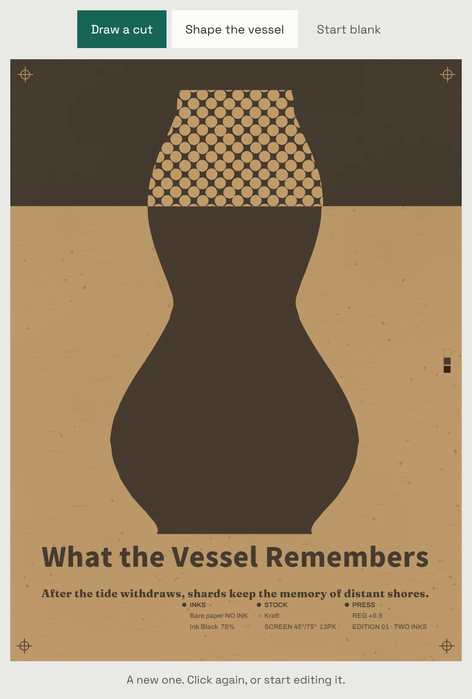
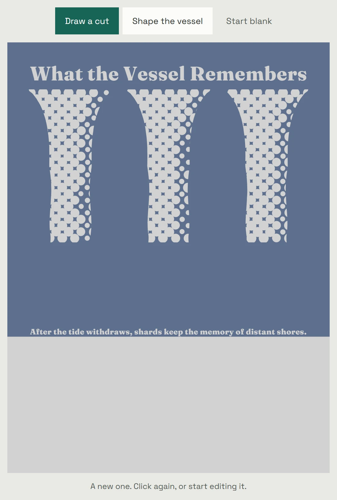

Shuffle another version
Begin with the editable sample, or choose Start blank and pick your own lines. Each Shuffle deals a layout, a form, two inks and a paper stock. Lines you wrote or picked stay. Generated phrases can vary within the selected language. Every part of the result stays editable.



